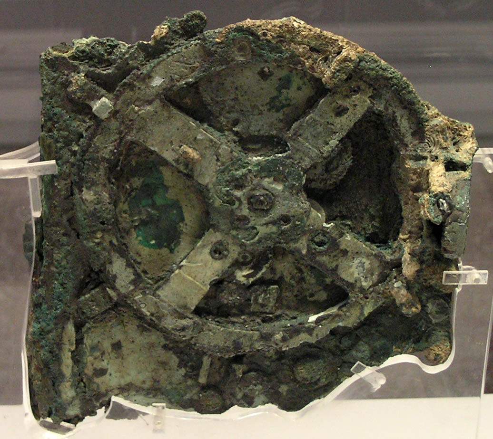
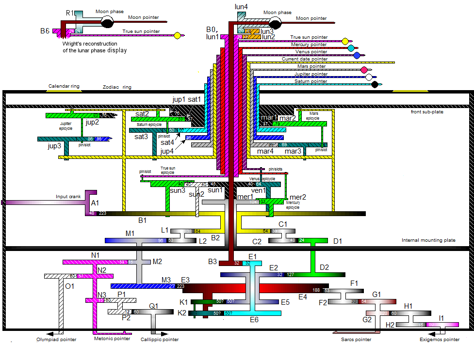

Agenda
- What is Antikythera Framework?
- brief history, our motivations
- Core features and benefits
- comparisons with other frameworks
- Deep-dive into the internals
- pros/cons of some design decisions
About the speaker
- 桐野 俊輔 (Shunsuke Kirino)
- Ex-physicist
- Server-side guy in ACCESS since 2011
- Developing antikythera core and operating antikythera clusters since 2015
1. What is Antikythera Framework?
About the name
- The Antikythera mechanism
- An ancient Greek analog computer
- Discovered in 1902 near the coast of Antikythera island
- Kind of an “Out-Of-Place ARTifact”
The Antikythera mechanism

The Antikythera mechanism
- Used to predict astronomical positions and eclipses
- for calendar and astrological purposes
Gear scheme (hypothetical)

So what’s Antikythera Framework?
History: Our problems in 2015
- 10s of running web services
- developed using different languages
- operated in different ways
- involving significant infrastructure cost
(1) Divergence in technology stacks
- Problems:
- Little chance of code reuse
- Increased cost for developer bootstrapping
- What we wanted:
- One language for server-side development
(2) Divergence in operations
- Problems:
- Lack of sharing of scripts/knowledge across teams
- Teams had no time to automate their “toil”s
- What we wanted:
- Standardized & automated operations (deployment, etc.)
(3) Infrastructure cost
- Problems:
- Extra cost for “buffer” and “redundancy”, too many idle CPUs
- Many resources to monitor/manage
- What we wanted:
- Single pool of computational resources that can be shared by all services
Our approach
- An Elixir framework that hosts multiple web services in a single ErlangVM cluster
Antikythera “gear”
- Hereafter we call each web service running within an antikythera cluster as a “gear”
- Actually the name “antikythera” comes from this term
- Gear may depend on other gear(s)
2. Core features and benefits
Core features (1)
- As a platform for multiple services
- Resource control and isolation
- gear doesn’t disturb other gears
- Automated operations
- deploy with hot code upgrades, etc.
- Built-in common functionalities
- logging, metrics reporting, etc.
Core features (2)
- As a web framework
- Domain-based request routing
- determine which gear to handle
- Path-based request routing within a gear
- determine which module/function to handle
- Features similar to e.g. phoenix
Core features (3)
- As an asynchronous job executor
- Built-in distributed job queues
- Running arbitrary Elixir code for each job
- One-off and periodic (cron) job scheduling
Benefits
- 1 language to learn
- Straightforward code reuse
- No need to write scripts for common tasks
- Reduced extra infrastructure cost
Cost savings
- Antikythera cluster in ACCESS
- running in AWS
- ~25 gears (would be ~50 instances)
- only 3 c4.large instances
- 2 guys to operate
Comparisons with phoenix
- Both are Elixir-based frameworks
- Phoenix has matured with large user base
- Antikythera offers a novel execution model for multiple services
Comparisons with micro-services architecture (1)
- Both advocate service-level code separations
- Microservice enforces complete isolation; in antikythera it’s less strict
- Antikythera reduces servers to manage, standardizes operations
Comparisons with micro-services architecture (2)
- Antikythera uses computational resources more effectively
- CPU/memory can be shared by all gears
- Gear-to-gear communications in antikythera involves less overhead
FAQ: What about DBs?
- Antikythera itself is DB-agnostic
- You can use any DB with any lib as you like
- Executor pool (explained later) provides a basis for rate limiting accesses to DB
Amenities for gears
- Gear comes with the followings out-of-the-box
- gear config
- alerting
- logging
- metrics reporting
Gear config
- Arbitrary map for each gear
- Store secrets and dynamic configurations
- such as API keys, connection strings, …
- Original data is stored in an encrypted JSON file
- The data is cached in ETS for fast access
Logging
- Each gear has its own logger process
- The following logs are auto-generated
- HTTP: request & response
- websocket: connect & disconnect
- async job: start & end
- error logs with stacktrace
Alerting
- When an exception is raised (not caught) by gear code, antikythera sends an email to the gear developers (in addition to error logs)
- Consecutive error alerts are batched
- Necessary to quickly find and fix bugs
Metrics reporting
- Various metrics are auto-gathered and sent to
MetricsStorage
- HTTP response times (average, 95%, max)
- async job execution times (average, 95%, max)
- status of exec pool: running/total processes
- ErlangVM-level metrics
Metrics reporting
- Example: store metrics in elasticsearch and watch them via kibana dashboard:
3. Deep-dive into the internals
HTTP request handling
- HTTP 1.1 server using cowboy 2
- Domain-based routing using cowboy’s router
- Path-based routing by matching against macro-generated function clauses
Gear-to-gear communications
- Service-level interactions (HTTP-like)
- synchronous, headers and bodies, etc.
- enables code sharing in HTTP- and g2g-handlers
- Elixir-level interactions
Clustering
- To maintain the cluster, each node periodically
- polls the current list of nodes from e.g. infrastructure API
- connects to any unconnected nodes
- Cluster-wide process registry using syn
EAL
- (Short for Environment Abstraction Layer)
- Pluggable infra-dependent features using behaviours
- Concrete implementations are specified by compile-time mix configurations
Resource control
- Each Erlang process
- has its own execution context and memory space
- isolated from other processes
- Thus, “number of processes” can be used as 1st approximation of resource consumption
- (That’s why we chose Elixir)
Executor pool
- control resources in terms of processes
- consists of 3 pools per type of tasks
- web request handlers
- websocket conections
- async job runners
Multi-tenant use cases
- Executor pool also supports multi-tenant gears
- Making exec pool per tenant
- Assigning exec pool when processing a task (e.g. an HTTP request)
Other limits
- There are also upper limits on
- size of heap memory per process
- request/job execution times
- rate of accesses to async job queues
Isolation
- As gears run in the same ErlangVM, they are not completely isolated
- Gear can e.g. call other gear’s code, get other gear’s secrets, etc.
- That’s why we call antikythera as “in-house PaaS”
- Untrusted code shouldn’t be installed in antikythera clusters
Dependency management
- All gears run in the same ErlangVM
- They share the same libraries and configurations
- To unify management of deps/configs, one needs an “antikythera instance”
Antikythera instance
- A mix project to manage deps/configs for a specific antikythera cluster
- Antikythera instance must depend on antikythera
- All gears in the cluster depend on the antikythera instance
- by doing so gears share the same deps/configs
- To make this dependency structure work, antikythera’s mix settings are rather tricky…
Deployment model
- Antikythera instance is packaged and deployed as an OTP release
- Each gear is packaged and deployed as an OTP application
- Gears are not included in the OTP release
- Antikythera polls new versions of instance/gears and self-updates them
Async job queues
- Job queue per exec pool
- distributed, fault tolerant data structure implemented using
raft_fleet
- runs within the same cluster of ErlangVMs
- Using DB for queues is also possible
- but we want to avoid excessive polling; we want push-based interactions
Async job workers
- Reside in the same ErlangVM
- don’t separate nodes by role, make all nodes homogeneous
- simplest possible cluster management
Elixir macro
- Used for e.g.
- filling out mix settings and configs
- generating common code for gears
- routing DSL
- …
- Plays a vital role in antikythera
Static analysis
- Introduced as a mix compiler
- check conformance to some of the rules
- module naming, prohibited functions, etc.
- problematic code in gear results in a compile error
Summary
- Antikythera Framework provides higher level abstractions for your web services
- Let’s unleash the full potential of Erlang and Elixir!